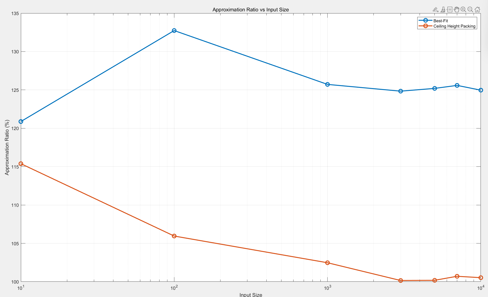

Texture Packing
Group 6
问题描述
本项目研究的主题是`Textur Packing`。Texture Packing 问题是一类矩形装箱问题，常用于计算机图形学和游戏开发领域。其目标是将多个矩形形状的纹理 (texture) 紧密地打包到一个更大的矩形纹理中。具体来说，题目要求如下：
输入：若干矩形纹理，每个纹理有固定的宽度和高度。 输出：一个大的矩形纹理，其宽度固定，要求设计一种方法尽量减少所需的高度。 限制条件：大矩形纹理的宽度是给定的，最终纹理必须尽可能紧凑。
举例说明
除非 P=NP，否则装箱问题不存在多项式算法有小于$\frac{3}2$的绝对近似比。
输入格式
1. 首先读取的两个数字分别是大纹理（容器）的最大宽度以及小纹理（小矩形）的个数n； 2. 接着为n行的小矩形数据，宽x高的格式依次输入。
输入样例：
10
5
10 10 9 2 9 8 1 9 8 10
由于题目没有明确给出输入输出格式，此处的格式为我们自定义完成。
算法与数据结构描述
比较直观的一个想法是先装大矩形，因为小矩形或许可以塞在大矩形的缝隙中，因此我们尝试利用贪婪算法解决。此时还有两个问题：如何衡量矩形大小，以及如何确定矩形装的位置。
由于容器宽是固定的，因此越宽的矩形也就越大。
关于矩形的填入顺序，我们的想法是从下往上填入，不断填补缝隙，最终得到近似最优解。
Rectangle数据结构
typedef struct {
int width;
int height;
} Rectangle;
// BST node structure
typedef struct TreeNode {
Rectangle rect;
struct TreeNode *left;
struct TreeNode *right;
} TreeNode;
-
为了表示存储单个小矩形，我们定义结构体
Rectangle，其内部属性分别为整形的宽与高； -
然后，我们将小矩形作为
BST的节点根据属性width构造二叉树，方便后续根据宽度快速寻找小矩形；
Partition数据结构
typedef struct Partition {
int start_index; // Starting x-coordinate
int width; // Width of the partition
int height; // Current height
struct Partition *left; // Pointer to left neighbor
struct Partition *right; // Pointer to right neighbor
int heap_index; // Current index in the heap
} Partition;
// Min-heap structure for partitions
typedef struct {
Partition **heap; // Array of partitions
int size; // Current size of the heap
int capacity; // Maximum capacity
int max_height; // max_height of all partitions
} MinHeap;
Partition是我们表示大容器内部存储状态的结构体；- 分区
Partition内部的属性功能简介如下：start_index：该分区在容器当中的起始位置；width与height：分别表示该分区的宽度与高度；struct Partition *left与struct Partition *right：分别指向容器当中相邻的分区，方便在出入矩形后，合并相同高度的分区操作；int heap_index：用来存储在小顶堆中的实际索引。
- 根据其
width来建堆；其max_height属性用于存储当前容器当中所有分区的最大高度，在每次插入新的分区时更新。
算法流程
- 利用分区作为小顶堆的节点建堆（初始化为高度为0，宽度为
container_width的分区），然后每次取用堆顶元素（宽度最小） - 在BST当中选择合适的小矩形插入到当前的位置，同时更新小顶堆中的分区：先调整其高度与宽度，然后检查是否需要合并；
- 如果在第二步当中无法找到适合的小矩形，将该分区的高度设置为相邻区域的较小高度（表示弃用），合并之后然后继续搜索。
数据结构实现
Rectangle相关
创建与插入节点
TreeNode* createNode(Rectangle rect) {
TreeNode* node = (TreeNode*)malloc(sizeof(TreeNode));
if (node == NULL) {
fprintf(stderr, "Memory allocation failed!\n");
exit(1);
}
node->rect = rect;
node->left = node->right = NULL;
return node;
}
TreeNode* insertBST(TreeNode* root, Rectangle rect) {
if (root == NULL) {
return createNode(rect);
}
if (rect.width < root->rect.width) {
root->left = insertBST(root->left, rect);
} else {
root->right = insertBST(root->right, rect);
}
return root;
}
-
创建节点时提供矩形结构体作为节点的rectangle属性；
-
插入时依据width进行排序。
寻找最合适的节点
TreeNode* findLargestFit(TreeNode* root, Element_type targetWidth) {
if (root == NULL) return NULL;
TreeNode* result = NULL;
if (root->rect.width > targetWidth) {
result = findLargestFit(root->left, targetWidth);
} else {
result = root;
TreeNode* rightResult = findLargestFit(root->right, targetWidth);
if (rightResult != NULL && rightResult->rect.width > result->rect.width) {
result = rightResult;
}
}
return result;
}
- 我们需要查找的是不大于
targetwidth且宽度最大的矩形。 - 如果当前节点的
width已经大于targetwidth，那么直接向其左子树继续搜索； - 如果当前节点的
width小于等于targetwidth，将返回值result先赋值为当前节点root，然后继续在其右子树中寻找； - 递归逻辑如
2,3步所示，如果找不到符合要求的节点，返回NULL。
删除指定节点
TreeNode* deleteNode(TreeNode* root, Rectangle rect) {
if (root == NULL) return NULL;
if (rect.width < root->rect.width) {
root->left = deleteNode(root->left, rect);
} else if (rect.width > root->rect.width) {
root->right = deleteNode(root->right, rect);
} else {
// Node found
if (root->left == NULL) {
TreeNode* temp = root->right;
free(root);
return temp;
}
if (root->right == NULL) {
TreeNode* temp = root->left;
free(root);
return temp;
}
// Node with two children: Get the inorder successor (smallest in the right subtree)
TreeNode* successor = root->right;
while (successor->left != NULL) {
successor = successor->left;
}
root->rect = successor->rect;
root->right = deleteNode(root->right, successor->rect);
}
return root;
}
- 递归查找节点：即正常BST删除的流程：首先递归查找待删除的节点。
- 节点删除的情况：即正常BST删除的三种情况：无儿子，单儿子和双儿子。
数据结构实现
Partition相关
以下操作与普通的小顶堆相同
删除指定分区
void removePartition(MinHeap *heap, Partition *part) {
int index = part->heap_index; // Get the index of the partition in the heap
if (index >= heap->size || index < 0) return; // Invalid index
// Replace with the last partition
heap->heap[index] = heap->heap[heap->size - 1];
heap->heap[index]->heap_index = index;
heap->size--;
// Adjust heap to maintain min-heap property
heapifyDown(heap, index);
heapifyUp(heap, index);
}
删除分区的操作借助于结构体的属性`heap_index`，快速在堆中定位，然后将堆尾节点替换当前节点，接着在此处位置向上与向下调整，维持堆的结构。由此将删除指定节点操作的时间复杂度降低为O(logW).
检查（并合并）指定分区的相邻区域
Function CombinePartitions(heap, part)
merged = false
// Merge with left neighbor if possible
If part.left exists AND part.left.height == part.height
Merge part with part.left
Remove part.left from heap
Update left pointer of part
merged = true
End If
// Merge with right neighbor if possible
// Rebalance the heap if merging occurred
If merged
RebalanceHeap(heap, part)
End If
End Function
该函数在每次搜索时调用，检查对应的分区是否需要合并（包括矩形无法插入的情况，因为我们调整了无法被插入矩形的分区的高度为相邻的较低高度，也相当于”插入“了矩形，且该情况一定需要合并）；
利用`Partition`邻域指针，快速检查对应的高度是否相等，如果相等则合并。合并时，将`Part`的宽度更新、邻域指针的指向更新，然后删除邻域中被合并的分区，并维护堆的性质（与上一个函数类似，`RebalanceHeap`通过在此处向上、向下`heapify`实现）。
算法主体
主函数
- 算法的主函数，通过动态分区和二叉搜索树（BST）进行矩形管理。整体流程如下：
- 初始化：创建一个分区堆用于管理和跟踪容器内的动态分区，同时计算所有矩形的总面积，为后续效率评估提供依据。
- 矩形组织：将矩形按宽度存储在二叉搜索树（BST）中，以便快速查找最适合某个分区的矩形。
- 矩形放置：
- 从分区堆中提取最小分区。
- 寻找宽度最适合分区的矩形。
- 如果找到合适的矩形，将其放入分区，并调整分区的高度和宽度。
- 如果没有找到合适的矩形，则调整分区高度。
- 分区合并：每次矩形放置或分区调整后，尝试合并相邻分区以优化利用率。
- 结果计算：放置完成后，计算容器的最终高度，并根据总矩形面积计算近似比，评估打包效率。
- 资源清理：清理分区堆和BST等数据结构，返回容器的最终高度。
过程分析
- 只有一个分区(0, 10, 0)
- 放入9x3矩形，分割为两个分区(0, 9, 3)和(9, 1, 0)
- 放入1x1矩形，分区变为(0, 9, 3)和(9, 1, 1)
- 最小分区宽是1，不能放入矩形，放入empty1，分区变为(0, 9, 3)和(9, 1, 3)
- 分区合并，成为(0, 10, 3)。
- 放入6x4，新建分区(0, 6, 4)和(6, 4, 0)
- 以此类推…
主函数伪码
Function PartitionPacking(rectangles, n, containerWidth) -> int
1. Initialize the partition heap for the container.
2. Calculate the total area of all rectangles.
3. Insert all rectangles into a Binary Search Tree (BST) based on their widths.
4. While there are remaining rectangles:
- Extract the smallest partition from the heap.
- Find the best-fitting rectangle for the partition in the BST.
- If a rectangle is found:
- Place the rectangle into the partition.
- Adjust the partition's height and possibly create new partitions.
- If no rectangle fits:
- Adjust the partition's height to minimize wasted space.
- Attempt to merge the partition with neighboring partitions.
- Reinsert updated partitions into the heap.
5. Calculate the final height of the container.
6. Print the approximation ratio and cleanup resources.
7. Return the final container height.
End Function
测试结果
输出说明
.......
-------------------- Conclusion --------------------
Approximation ratio: 128.5714%
Final height dealing with 5 rectangles by Partition packing algorithm:9.00
.......表示的是依次插入小矩形的过程信息；- 最后分别输出
Approximation Ratio与最终高度。其中Approximation Ratio采用算法得到的最终高度/理想高度optimal_height, 后者通过area_sum/container_width得到，即将所有的矩形面积除以容器宽度。因此，此处的Approximation Ratio实际上代表着空间利用率而不是近似比。 - 如果此时有两个算法，在我们的代码框架下执行得到的
Approximation Ratio分别为$a_1$和$a_2$，实际上二者的近似比为$A_1$和$A_2$，显然有$\frac{a_1}{a_2}=\frac{A_1}{A_2}$，因此在一定程度上可作为判据，另外显然此处的Approximation Ratio是近似比的下界。
样例-正确性测试
input:
10
5
4 3 3 2 6 5 5 3 7 1
output:
Extracted partition: start_index=0.00, width=10.00, height=0.00
Selected partition: start_index=0.00, width=10.00, height=0.00
Placing rectangle: width=7.00, height=1.00 in partition at index 0.00
New partition created: start_index=7.00, width=3.00, height=0.00
Remaining rectangles to place: 4
partition 0's height is 0.00
partition 1's height is 1.00
Extracted partition: start_index=7.00, width=3.00, height=0.00
Selected partition: start_index=7.00, width=3.00, height=0.00
Placing rectangle: width=3.00, height=2.00 in partition at index 7.00
Remaining rectangles to place: 3
partition 0's height is 1.00
partition 1's height is 2.00
Extracted partition: start_index=0.00, width=7.00, height=1.00
Selected partition: start_index=0.00, width=7.00, height=1.00
Placing rectangle: width=6.00, height=5.00 in partition at index 0.00
New partition created: start_index=6.00, width=1.00, height=1.00
Remaining rectangles to place: 2
partition 0's height is 1.00
partition 1's height is 2.00
partition 2's height is 6.00
Extracted partition: start_index=6.00, width=1.00, height=1.00
Selected partition: start_index=6.00, width=1.00, height=1.00
No suitable rectangle found for partition at index 6.00. Adjusting partition...
Partition adjusted: start_index=6.00,, height=2.00
Merging with right neighbor at index 7.000000.
Partition after merging: start_index=6.00, width=4.00, height=2.00
partition 0's height is 2.00
partition 1's height is 6.00
Extracted partition: start_index=6.00, width=4.00, height=2.00
Selected partition: start_index=6.00, width=4.00, height=2.00
Placing rectangle: width=4.00, height=3.00 in partition at index 6.00
Remaining rectangles to place: 1
partition 0's height is 5.00
partition 1's height is 6.00
Extracted partition: start_index=6.00, width=4.00, height=5.00
Selected partition: start_index=6.00, width=4.00, height=5.00
No suitable rectangle found for partition at index 6.00. Adjusting partition...
partition 0's height is 5.00
partition 1's height is 6.00
Extracted partition: start_index=6.00, width=4.00, height=5.00
Selected partition: start_index=6.00, width=4.00, height=5.00
No suitable rectangle found for partition at index 6.00. Adjusting partition...
partition 1's height is 6.00
Extracted partition: start_index=6.00, width=4.00, height=5.00
Selected partition: start_index=6.00, width=4.00, height=5.00
No suitable rectangle found for partition at index 6.00. Adjusting partition...
Extracted partition: start_index=6.00, width=4.00, height=5.00
Selected partition: start_index=6.00, width=4.00, height=5.00
No suitable rectangle found for partition at index 6.00. Adjusting partition...
Extracted partition: start_index=6.00, width=4.00, height=5.00
Selected partition: start_index=6.00, width=4.00, height=5.00
No suitable rectangle found for partition at index 6.00. Adjusting partition...
Selected partition: start_index=6.00, width=4.00, height=5.00
No suitable rectangle found for partition at index 6.00. Adjusting partition...
Partition adjusted: start_index=6.00,, height=6.00
Merging with left neighbor at index 0.00.
Partition after merging: start_index=0.00, width=10.00, height=6.00
No suitable rectangle found for partition at index 6.00. Adjusting partition...
Partition adjusted: start_index=6.00,, height=6.00
Merging with left neighbor at index 0.00.
Partition after merging: start_index=0.00, width=10.00, height=6.00
Partition adjusted: start_index=6.00,, height=6.00
Merging with left neighbor at index 0.00.
Partition after merging: start_index=0.00, width=10.00, height=6.00
Partition after merging: start_index=0.00, width=10.00, height=6.00
partition 0's height is 6.00
partition 0's height is 6.00
Extracted partition: start_index=0.00, width=10.00, height=6.00
Extracted partition: start_index=0.00, width=10.00, height=6.00
Selected partition: start_index=0.00, width=10.00, height=6.00
Placing rectangle: width=5.00, height=3.00 in partition at index 0.00
New partition created: start_index=5.00, width=5.00, height=6.00
Remaining rectangles to place: 0
partition 0's height is 6.00
partition 1's height is 9.00
-------------------- Conclusion --------------------
Approximation ratio: 128.5714%
Final container height: 9.00
样例-输入合法性测试
input:
5
3
3 4
5 6
7 8
output:
Error: Invalid rectangle size! Width must be > 0 and <= container width, height must be > 0
样例-浮点数测试
input:
5.5
3
2.5 3.9 4 6 1.8 4.5
output:
Extracted partition: start_index=0.00, width=5.50, height=0.00
Selected partition: start_index=0.00, width=5.50, height=0.00
Placing rectangle: width=4.00, height=6.00 in partition at index 0.00
New partition created: start_index=4.00, width=1.50, height=0.00
Remaining rectangles to place: 2
partition 0's height is 0.00
partition 1's height is 6.00
Extracted partition: start_index=4.00, width=1.50, height=0.00
Selected partition: start_index=4.00, width=1.50, height=0.00
No suitable rectangle found for partition at index 4.00. Adjusting partition...
Partition adjusted: start_index=4.00,, height=6.00
Merging with left neighbor at index 0.00.
Partition after merging: start_index=0.00, width=5.50, height=6.00
partition 0's height is 6.00
Extracted partition: start_index=0.00, width=5.50, height=6.00
Selected partition: start_index=0.00, width=5.50, height=6.00
Placing rectangle: width=2.50, height=3.90 in partition at index 0.00
New partition created: start_index=2.50, width=3.00, height=6.00
Remaining rectangles to place: 1
partition 0's height is 6.00
partition 1's height is 9.90
Extracted partition: start_index=2.50, width=3.00, height=6.00
Selected partition: start_index=2.50, width=3.00, height=6.00
Placing rectangle: width=1.80, height=4.50 in partition at index 2.50
New partition created: start_index=4.30, width=1.20, height=6.00
Remaining rectangles to place: 0
partition 0's height is 6.00
partition 1's height is 9.90
partition 2's height is 10.50
-------------------- Conclusion --------------------
Approximation ratio: 137.9928%
Final height dealing with 3 rectangles by Partition packing algorithm:10.50
样例-最大输出测试
input: (file: size_10000.txt)
50
10000
...
output:
-------------------- Conclusion --------------------
Approximation ratio: 100.2564%
- Final height dealing with 10000 rectangles by Partition_heap packing algorithm: 28023.00
样例-高度差异对比测试
容器宽度固定为10, 小矩形的宽度范围为1~10,不同矩形高度范围下的Approximation Ratio:
| 矩形高度 | 10 | 100 | 1000 | 10000 |
|---|---|---|---|---|
| 较高 | 113.7500% | 104.1260% | 102.2160% | 100.5645% |
| 较低 | 115.3846% | 105.9524% | 102.4718% | 100.5248% |
- 较高的范围为
1~50, 较低矩形的高度范围为1~5. - 由实验结果可见，高度差异对近似比的影响较小。但同时当前输入的设置整体有关，从而导致差异不明显。
与strip算法对比
与现有的strip算法进行比较，用上述的short类文件作为输入，不同规模输入下的，二者算法的Approximation Ratio：
| 算法 / 输入规模 | 10 | 100 | 1000 | 3000 | 5000 | 7000 | 10000 |
|---|---|---|---|---|---|---|---|
| strip | 120.88% | 132.74% | 125.72% | 124.84% | 125.20% | 125.59% | 124.97% |
| Ceiling_height packing | 115.3846% | 105.9524% | 102.4718% | 100.1554% | 100.1825% | 100.7064% | 100.5248% |
strip算法将输入的矩形按照高度排序，优先处理较高的小矩形；每次将对应的矩形插入到最合适的位置（具有最小剩余宽度且能够安放的区间），直至不存在没有插入的矩形；strip算法与我们的程序差别在于，前者按照矩形高度进行处理，后者根据当前的容器情况选取最合适宽度的矩形进行处理；
与strip算法对比图

结果分析
- 一系列的正确性测试表明，对于正常的输入、边界输入以及非法输入，我们的程序都能够分别给出期望的正确输出；
- 高度对比中，我们对于不同规模的输入分别测试了高度较高和较低的矩形输入（对应宽度保持一致），结果的近似比数据显示：高度较高的矩形，其对应结果的近似比往往较低与高度较低的矩形输入组；
- 通过对比了我们的算法与
strip算法，发现：- 不同规模下，
strip算法结果的”近似比“（空间利用率）总是高于我们的算法； Partition_heap packing算法的"近似比"随着输入规模的增大呈现明显的下降趋势，逐渐趋近于1。 这是因为，该算法总是从分区堆中提取最小高度的分区，然后从BST当中寻找最为合适的矩形。输入规模的扩大意味着每次选取最佳矩形的机会增加，因此越来越接近于最优解。
- 不同规模下，
算法分析
1. 时间复杂度分析
BST构建阶段
对$n$个矩形进行BST插入，每次插入为$O(log n)$,总共需要$n$次插入操作;
这一阶段的复杂度为$O(nlog n)$
装箱循环阶段
while 循环执行$n$ 次（$n$ 为小矩形的个数），在每次循环中：($W$为容器的宽度)
- extractMinPartition(): O(log W) //从堆中提取最小分区，需要heapifyDown且分区数目最多为容器宽度；
- findLargestFit(): O(log n) //在 BST 中查找最佳矩形，最多有n个节点，下同
- deleteNode(): O(log n) //从 BST 中删除节点
- insertPartition():O(log W) //将分区插入堆中
- combinePartitions(): O(log W) //如果需要合并，维护堆的性质所需的时间为O(log W)
- heapifyUp()/heapifyDown(): O(log W) //调整堆
- 每次循环的复杂度为 O(log n + log W)
- 总循环复杂度为 O(n * (log n + log W))
因此，`总体时间复杂度`为：$O(n \cdot (\log n + \log W))$.
当容器宽度$W$远大于$n$时，时间复杂度为$O(n \cdot \log W)$，为多项式时间复杂度。
算法分析
2. 空间复杂度分析
1. 分区堆`MinHeap`：最多存在$W$个分区（分区的宽度均为1时），所以为$O(W)$;
2. 二叉搜索树`BST`：存储输入的$n$个矩形，所以为$O(n)$;
3. 读取时设置的矩形数组：$O(n)$;
4. 其他辅助变量：$O(1)$
因此，总体空间复杂度为：$O(W+n)$.
算法分析
3. 近似比分析
近似比影响因素
矩形数量 矩形宽度 矩形高度
当小矩形的数量n增大时，意味着每次选择最佳矩形进行插入的空间增大，更有利于“完美插入”，此时近似比越低，即 $\rho$ 与 $n$ 呈负相关；
记小矩形的宽度 $w_i$ 与容器宽度 $W$ 的比值 $\frac{w_i}{W}$为 $\alpha$；
当$\alpha$减小时，对于相同规模n的输入，更有机会寻找到矩形完成”完美插入“，因此此时近似比降低，即 $\rho$ 与 $\alpha$ 呈正相关；
记小矩形 $r_i$ 的高度为 $h_i$,根据测试结果可知，在其他条件不变的情况下，矩形的 $h_i$ 较大时，"近似比"有轻微的优势，但是差异不大；
因此，记所有矩形的高度期望值为 $E_h$ ,我们猜测 $\rho$ 可能与 $E_h$ 呈负相关；
贪心策略的局限性
在这个问题中不具备全局最优性，以下是一个例子(排版限制，这是躺倒的图片)：
按照我们的算法会得到这样的结果，显然这种不是最优的。（2x14插入当前右下角更优）
因此，这也启发我们：选择某个分区的最适矩形时，除了考虑宽度，我们还必须考虑其高度。相同宽度的不同高度对后续的排列将产生影响。使用宽度与高度的加权值来对BST进行排序，将会成为改进这一贪心不足的方向。
小组分工
2. 测试程序（及报告的测试章节） --李俊希
3. ppt 及补充工作 --张徵羽